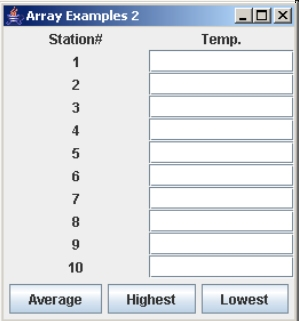

Reading chapter 11.11 in your text should make you familiar with the basic concepts and terminology relating to Array Lists, such as:
The ArrayList class is a special class that handles arrays of objects. ArrayList objects contain a set of references to other objects in memory, just as a String[] or Shape[] array would. The difference is that the ArrayList class contains a set of methods that make it easier to work with arrays of objects. For example, with an ArrayList you can insert objects into the middle of a list, expand a list to hold more items, or shrink a list to make it hold fewer items.
In learning about the ArrayList class, you will often see reference to other classes, such as the Vector, Collections and LinkedList classes. These are worth looking at if you are interested in Array processing. In fact, the Vector class works almost exactly like ArrayList except that it provides more functionality. If you are writing a large program that uses ArrayList, you should definitely check out the Vector class.
An ArrayList has a capacity. The capacity refers to the number of elements the array list can hold. When you construct an array, you can specify the minimum capacity of the array:
ArrayList shapes = new ArrayList(5);
This statement creates an array list called shapes with a minimum capacity of 5. This means you have five elements available in which to put objects. If you use the default constructor ArrayList() to create a new ArrayList object, which doesn't include an argument for capacity, a default capacity of 10 is used.
ArrayLists can be dynamic, so if you want to increase the capacity of the list so you can add more than 5 objects, you can use the ensureCapacity() method:
buttons.ensureCapacity(7);
This statement changes the minimum capacity of the array by 2, so that it can hold 7 elements.
Don't confuse the capacity of the array with the size of the array. The size of the array is the number of elements it contains. For example, an array can have a capacity of 7 (it can hold 7 items) but it's size might be 5 (it currently contains 5 objects).
Sometimes your array capacity might be much more than its current size. To save memory in this kind of situation, you should use the trimToSize() method, which trims down the array capacity to be equal to the size, or number of objects in the list.
To retrieve the size of an array (the number of elements in the list), use the array list's size() method (see example below).
There are two ways you can add an element to an array list. The add() method accepts an object as an argument and adds that object to the end of the list:
shapes.add(new Circle(5));
You can also insert an element into an array list if you know the index of the element that goes after the new element:
shapes.add(3, new Cylinder(2, 4));
This will insert a Cylinder object into element 3. The object that was in element 3 before will be moved to element 4, and any object in element 4 will be moved to 5, etc. In other words, all objects in the current position and after will be shifted down one spot.
All objects in the array list must be contiguous. In other words, your array list elements must be adjacent to each other: You can't have objects in the first 3 elements, then nothing in the next element, and then an object in the 5th element. The elements have to fill the array one-after-another with no gaps.
If you need to update or change an existing element in the array, you can use the set() method:
shapes.set(4, new Sphere(7));
The statement above will replace the current object in element 4 with a new Sphere object. This will destroy the array list reference to the object that was already in element 4, so if you need it, the set method will also return it for you:
Shape oldShape = shapes.set(4, new Sphere(7));
This will take the object currently in element 4, store its memory address in the variable oldShape, and then put a new button in element 4.
What if you wanted to store primitive data in an array? For example, in previous exercises we've declared an array of doubles or ints and asked the user to store values in the array, then calculated the average of those values. In doing these exercises, we've always had to find out how many values the user wanted to enter so we would know how to define the array. An ArrayList can expand when necessary, so it would be much easier for this kind of exercise. However, ArrayLists store objects, so how would we store primitive data in an ArrayList?
We learned previously that each primitive type comes with a wrapper class. They contain methods such as parseInt() and parseDouble(), but they can also be instantiated to hold numeric objects. For example:
Integer num = new Integer(5);
This statement creates an integer object with a value of 5. It would then make sense that we could create an array of Integers with code such as:
ArrayList list = new ArrayList(); list.add(new Integer(2)); ... etc ...
Because of Java's new auto-boxing and auto-unboxing features, we can now create an array list of primitives easily:
ArrayList list = new ArrayList(); list.add(2); list.add(25); ... etc ...
Write a program that records course grades from a user using an ArrayList. Keep asking for grades until the user has no more grades to enter. Display the average grade, and the number of grades that were above the average.
Use the GUI provided.
Once you have an array list of objects, you will probably at some point need to retrieve the objects. For example, you might have a collection of grades for which you'd like to calculate the average. The get() method will retrieve an object at a specified index. This method returns a value of type Object:
Object someObject = shapes.get(2);
This statement will get the object at element 2 and store a reference to that object in the someObject variable.
Items are stored in the array list as regular objects. There is a class in Java called Object that represents various objects in a generic form. Array lists by default store all objects as the class type Object. The Object class doesn't have the method getArea() or getRadius() that your Circle class does. The only methods we've used so far that are in the Object class are toString() and equals(). If you want to use any other method that belongs to an object stored in an array list, you'll need to cast the array list object.
For example, you made four Circle objects and stored them in the array list. The array list object took these Circles and put their addresses into Object address locations. When you try to retrieve one of your circles from the array list using get(), the get() method only knows how to return the address as an Object, not as a Circle. Therefore, we have to cast items from the array list back into their original form:
shapes.add(4, new Circle(5)); ... Circle temp = (Circle)shapes.get(4);
This last statement will retrieve the object at element 4, cast it into a Circle and store it in the variable temp.
Remember that if you want to invoke any methods or access any attributes that are specific to an object type, you'll have to cast this object into the type of class it belongs to.
The remove() method will allow you to remove an element from a list in two ways. The remove(int index) method will remove the object at the specified index and return it. It will move all elements below position index up one slot and the array size will decrease by 1. The remove(Object o) method will search for the specified object in the list and, if it exists, remove it (and shifts all elements below the object up one slot). This method returns true if the object was removed and false if the object was not found. Example:
Circle circle = (Circle)shapes.remove(2); boolean isGone = shapes.remove(circle3);
The first statement removes the shape in element 2 and stores it in the Circle variable circle. The second statement stores true in the isGone variable if the object in the circle3 variable is found and removed from the list.
If you need to remove all the elements in the array list, use the clear() method:
shapes.clear();
Be careful when using the add(), set(), get(), and remove() methods. If you try to access an array index that doesn't exist, you'll get an error!
We often use the size() method to ensure that we don't accidentaly go beyond the bounds of the array list:
for (int i=0; i<shapes.size(); i++)
System.out.println(shapes.get(i));
// another example:
int item = Integer.parseInt(JOptionPane.showInputDialog(null,
"Enter the item you'd like to view.", "Item",
JOptionPane.QUESTION_MESSAGE));
if (item < myListOfItems.size())
{
Object o = myListOfItems.get(item);
// and do whatever with the found object...
}
else
JOptionPane.showMessageDialog(null, "Item not found!",
"Error", JOptionPane.ERROR_MESSAGE);
You can also check to see if an array has any elements in it at all using the isEmpty() method:
if (!shapes.isEmpty()) for (int i=0; i<shapes.size(); i++) System.out.println(buttons.get(i));
There are a variety of ways in which you can search for elements in the array list. The contains() method tells you if an item is in the list and the indexOf() and lastIndexOf() will give you the index of an object if it's in the list.
The contains() method will search for an object in the array list and will return true if the object is found in the list, false otherwise. The following code can be used to see how the contains() method works:
// tests the use of the contains() method
ArrayList a = new ArrayList();
Color[] colours = { Color.RED, Color.BLUE, Color.GREEN,
Color.YELLOW, Color.PINK};
// add each item in colours to the list
for (int i=0; i<5; i++)
a.add(colours[i]);
// is the blue colour object in the list?
if (a.contains(Color.BLUE))
System.out.println("Contains Color.BLUE: true");
The indexOf() method will take an object and, if it exists in the list, will return the index of the first occurrence of the object in the list. If the object is not found in the list, a -1 value is returned. The lastIndexOf() works similarly, but will return the index of the last occurrence of an object in the list (or a -1 if not found).
int index = colours.indexOf(Color.BLUE);
Examine the following code to see what it does:
import javax.swing.*;
import java.util.*;
public class RandomNumbers
{
public static void main(String[] args)
{
int[] numbers = new int[10];
for (int i=0; i<numbers.length; i++) {
numbers[i] = (int)(Math.random() * 100 + 1);
// for debugging
System.out.println(numbers[i]);
}
int key =
Integer.parseInt(JOptionPane.showInputDialog(null,
"Enter a value to search for.", "Search",
JOptionPane.QUESTION_MESSAGE));
Arrays.sort(numbers);
int location = Arrays.binarySearch(numbers, key);
if (location >= 0)
{
JOptionPane.showMessageDialog(null, "Value " + key +
" found at position " + location + ".");
} else {
JOptionPane.showMessageDialog(null, "Value " + key +
" not found.");
}
}
}
Rewrite this program to perform the exact same tasks using an ArrayList instead of a regular array.
Generic types are a special syntax used to define certain classes, methods, and interfaces. For example, the ArrayList class has been defined with a generic type so that the programmer can later instantiate an ArrayList object to handle a specific type of object. This makes programming with the ArrayList (and other classes/methods) easier; you can eliminate a lot of code if you define your ArrayList to hold only Employee objects, or only JTextField objects.
You've noticed that in many cases when you're getting an array list element you need to cast that element into its original type before you can use it. For example, we had to cast array list elements into circle objects before we could use the getArea() method.
If you know that your array list is going to contain only one kind of object (i.e. all Integer objects or all Circle objects) you can use special notation in your constructor to specify this:
ArrayList<Circle> roundThings = new ArrayList<Circle>(5);
The above statement creates an array list with a capacity of 5 that will contain only Circle objects.
Now when you want to retrieve elements, Java already knows that your array list elements are Circles, so you don't have to cast anything. The code previously written as:
ArrayList list = new ArrayList();
list.add(new Circle(5));
list.add(new Circle(10));
list.add(new Circle(7.5));
list.add(new Circle(2));
for (int i=0; i<list.size(); i++)
{
Circle c = (Circle)list.get(i);
System.out.print(c);
System.out.println(" area: " + c.getArea());
}
When you look at the docs for a class/method that has a generic type defined, you will see something like <E> or <T>. The <E> or <T> is the generic type syntax used as a place-holder. The programmer can put any other class name in place of the E or T. For example, the above code can now be written as:
ArrayList<Circle> list = new ArrayList<Circle>();
list.add(new Circle(5));
list.add(new Circle(10));
list.add(new Circle(7.5));
list.add(new Circle(2));
for (int i=0; i<list.size(); i++)
{
System.out.print(list.get(i));
System.out.println(list.get(i).getArea());
}
Although arrays of components take up less memory and require less processing for simple tasks, you might occasionally require the extra overhead of the ArrayList class for components. With an ArrayList of components, you can minimize the amount of code required to perform operations such as in the colours example (do keep in mind however, that an ArrayList requires a lot more resources than a simple array!).
Let's examine the colours example with an ArrayList. Recreate the same interface, but leave the actionPerformed() method empty. You'll have to change the array declaration to use an array list of JRadioButtons, and you'll have to alter the loop that sets up the radio buttons.
In the first version of this example, the largest part of the code was finding out which option button was selected. With an ArrayList object of JRadioButtons, we can do this a lot faster. We know that e.getSource() contains the reference or memory address of the option button that fired the event. The ArrayList class contains a variety of methods that allow you to search the list for a specific object reference. For example, the contains() method tells you if an item is in the list and the indexOf() and lastIndexOf() will give you the index of an object if it's in the list.
The indexOf() method will take an object and, if it exists in the list, will return the index of the first occurrence of the object in the list. If the object is not found in the list, a negative value is returned. The lastIndexOf() works similarly, but will return the index of the last occurrence of an object in the list (or a negative value if not found).
int index = optColours.indexOf(e.getSource());
Using this information, we can easily find out the ArrayList location of the object that fired the event:
int index = optColours.indexOf(e.getSource());
Once we have the index value, you can change the colour by locating the correct Color object in the colour object array:
lblDisplay.setBackground(colours[index]);
The following program calculates information for a set of 10 weather stations. The text boxes are in an ArrayList. Design the interface and write the code for the three buttons. Bonus: Register the text boxes with ActionListener so that, when the user presses the Enter key in a field, it jumps to the next field. If the user is in the last field, jump to the first field.

Chapter 22 covers the Collections framework. This collection of classes and data structures are extremely useful when writing complex programs that use structurs such as ArrayLists or Vectors, stacks, queues, and hash tables.